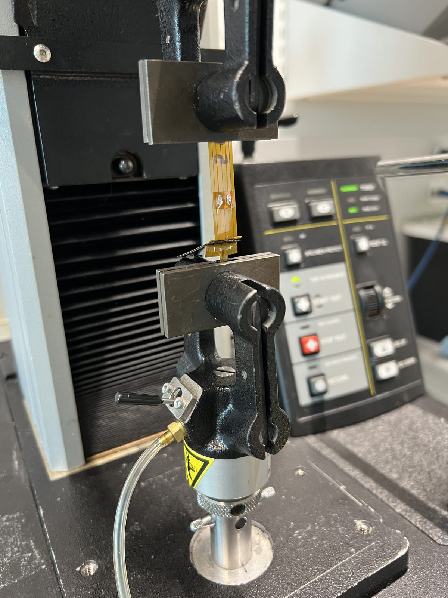
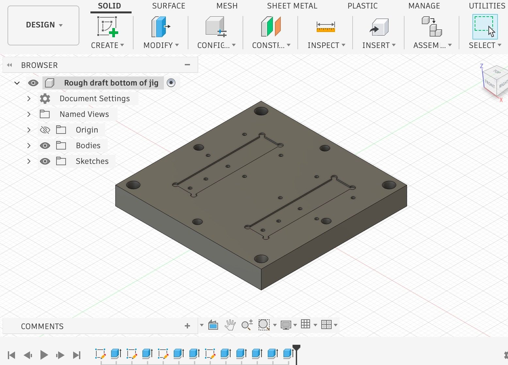
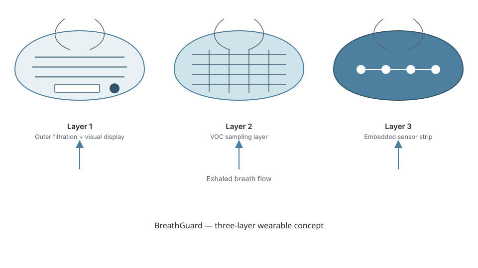
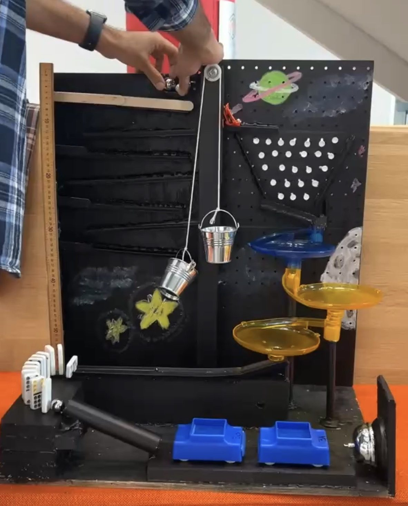
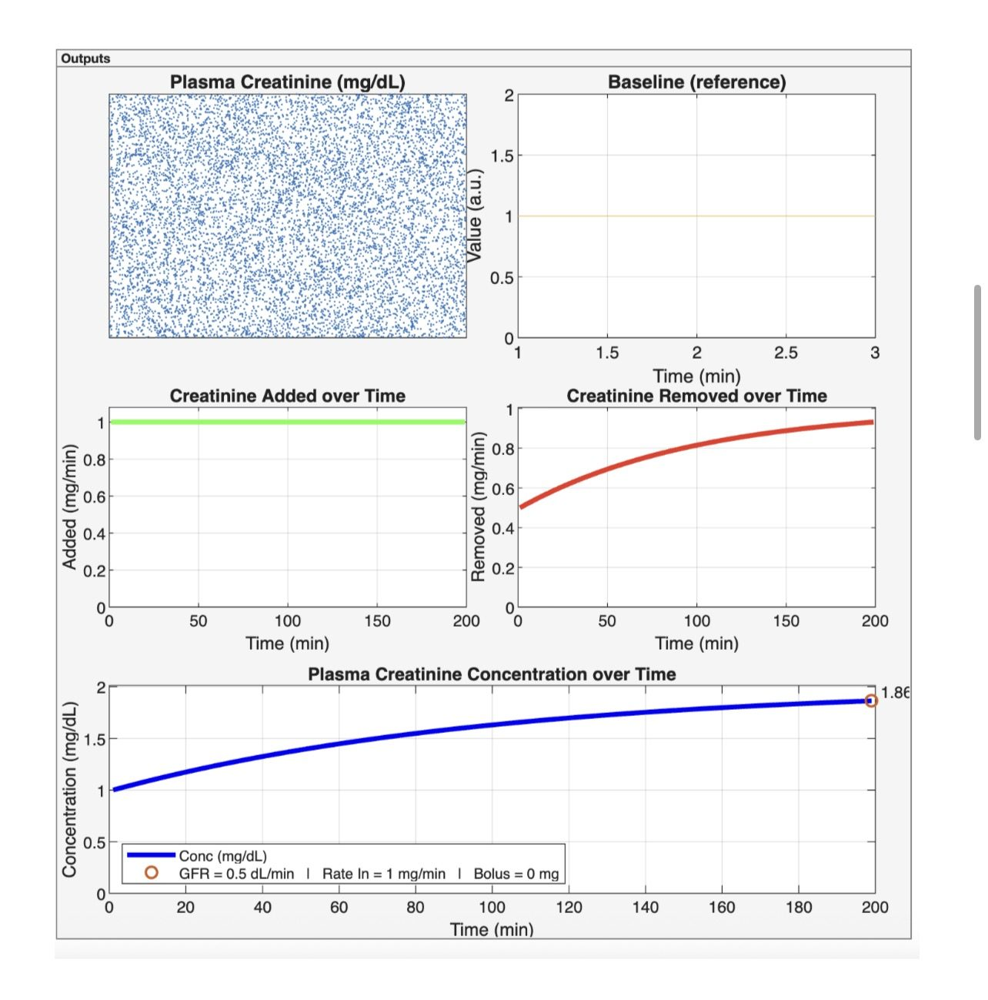
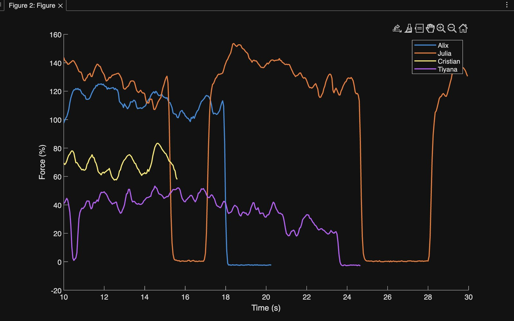

Projects
Research and coursework spanning biomedical device fabrication, mechanism design, and physiological modeling.


Flexible Biomedical Sensor Manufacturing
Designed and executed a design-of-experiments (DOE) study investigating dwell time, pressure, temperature, and fixture geometry to optimize manufacturing of flexible biomedical sensors, then independently proposed and tested new manufacturing parameters based on the results.
- Fabricated 30–40 sensors using heat press manufacturing, laser cutting, and custom assembly fixtures; contributed to production and evaluation of ~50 prototype devices
- Operated an Instron universal testing system to evaluate peel strength and characterize adhesive versus cohesive failure modes
- Developed MATLAB scripts to analyze mechanical testing data, evaluate sensor sensitivity, and generate publication-quality figures
- Designed an improved manufacturing jig in Fusion 360 and prototyped multiple iterations using 3D printing

BreathGuard: Wearable Sensor Enclosure
Designed a wearable biosensor concept for non-invasive VOC detection, evaluating enclosure architecture, sensor integration, and alternative sensing approaches for a compact wearable device.

Rube Goldberg Machine
Designed and optimized a pulley mechanism to reliably transfer a metal ball between stages, accounting for load, friction, and energy transfer. Built and tested interconnected mechanisms, iterating on ramps, pulley geometry, and magnetic-car interactions to improve repeatability across trials.

Renal System Simulation
Developed and analyzed a MATLAB model of renal filtration, simulating how changes in GFR and creatinine production affect plasma concentration and steady-state behavior under physiological conditions.

EMG: Muscle Coactivation & Fatigue
Recorded and analyzed my own bicep and triceps EMG signals using surface electrodes and a hand dynamometer to study motor unit recruitment, coactivation between antagonistic muscles, and the onset of fatigue during sustained contraction. Collaborative lab with Julia, Cristian, and Alix — I led the analysis and write-up for the group's fatiguing-contraction data (Figure 3, Lab 2) and the discussion questions on coactivation and the eyes-closed trial.